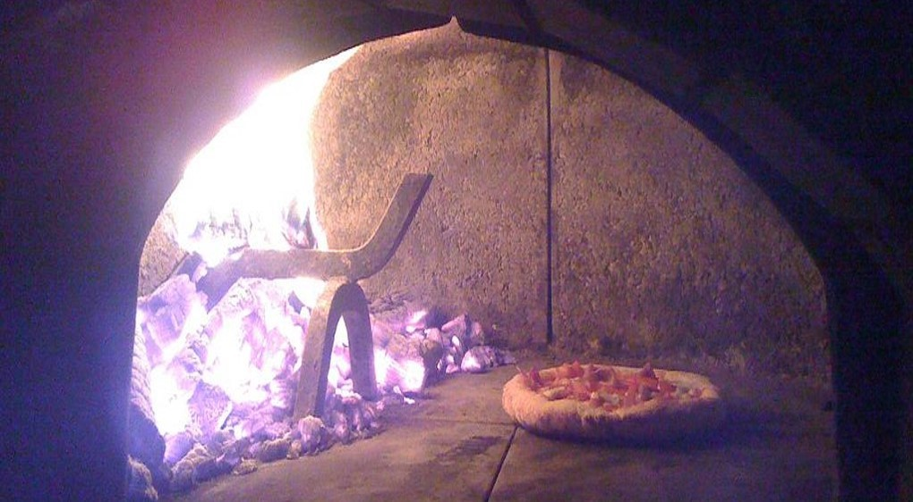

Our Story:
Dawg Pizza was started in 2013 with one simple goal: to get the students of the University of Washington to eat our pizza for every single meal. Well, maybe not every single meal, but most of them anyway. Cold pizza is really good for breakfast. And who can deny that pizza for lunch is really tasty? And when you've had a long day of classes and you're hungry, why not order a pizza for dinner too? And what should you do when you get hungry during that late-night study session? Order a pizza! That's where we come in.
We make the traditional pizzas, but we also mix things up with non-traditional ingredients. Tomato sauce is great, but how about plum, peanut, soy, or teriyaki sauce? You can get pepperoni anywhere, so how about some roasted duck or venison instead? Mushrooms are nice, but what about stir-fried cabbage and fried egg? We do it all.
Our pizzas are the BEST in Seattle, but don't take our word for it. Try one and you'll see!
Our Ecological Impact:
We love the environment, and we take extra steps to reduce our ecological footprint. For example, we collect and burn only naturally fallen wood from happy trees located within 100 miles of the restaurant. All our ingredients are fair-trade, organic, and residents of Washington State. Our meats come from animals that were named, raised in the ranchers' homes as if they were their children, and educated in the finest animal universities. The wheat for our dough is crushed by hand using a mortar and pestle. Our pizza boxes are made from recycled exam Blue Books and are guaranteed to decompose within seconds of finishing your pizza. We deliver using only rodent-powered vehicles and we all bike to work. We love the ENVIRONMENT!
